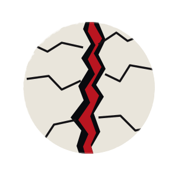
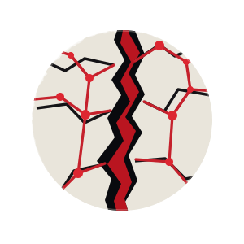

La Faille noire × Interstice
Planche de contrôle des deux SVG transparents dérivés des fichiers existants. Ce document technique ne valide pas la fidélité aux planches originales.
Observer les traits fins à 32 px, l'aspect du filtre organique, les contrastes, le détourage sur fonds clair et rouge. Les versions avec fond intégré restent conservées séparément.
La Faille noire · Noir profond

La Faille noire · Blanc cassé
La Faille noire · Rouge
Interstice · Noir profond

Interstice · Blanc cassé
Interstice · Rouge
Sources existantes : La Faille noire · Interstice. Ces liens permettent de comparer les variantes avec fond et transparentes.


Exports PNG et WebP
Conversion locale depuis les SVG transparents existants. Aucun fichier n'est envoyé à un serveur. Le navigateur télécharge le format demandé uniquement s'il sait le produire. Les filtres SVG peuvent avoir un rendu différent selon le moteur.
La Faille noire
Interstice
Choisir une taille et un format pour générer un fichier localement.